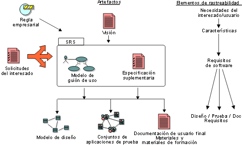

| Concepto: Rastreabilidad |
 |
|
| Elementos relacionados |
|---|
IntroducciónLa rastreabilidad es la capacidad para rastrear un elemento del proyecto hasta otros elementos del proyecto relacionados, especialmente los que están relacionados con requisitos. Los elementos del proyecto implicados en la rastreabilidad se llaman elementos de rastreabilidad. Entre los elementos de rastreabilidad típicos se incluyen diferentes tipos de requisitos, elementos de modelos de análisis y diseño, productos de trabajo de prueba, y material de formación y documentación de soporte para el usuario final, tal como se muestra en la figura de abajo.  La jerarquía de rastreabilidad. Cada elemento de rastreabilidad tiene su propio conjunto exclusivo de atributos asociados (consulte el apartado Atributos de requisitos), que es útil para rastrear el estado, los beneficios, los riesgos, etc. asociados a cada elemento. Objetivo de la rastreabilidadEl objetivo de establecer la rastreabilidad es ayudarle a:
La rastreabilidad le ayuda a comprender y gestionar cómo se convierte la entrada en los requisitos, como reglas empresariales y solicitudes del interesado, en un conjunto de características del sistema y necesidades clave del usuario/interesado, tal como se especifica en el documento Visión. El modelo de caso de uso, a su vez, esboza cómo se convierten estas características en funciones del sistema. Los detalles de cómo interactúa el sistema con el mundo exterior se capturan en casos de uso, con otros requisitos importantes como los requisitos no funcionales, y restricciones de diseño en las especificaciones suplementarias. La rastreabilidad también le permite seguir cómo se convierten estas especificaciones detalladas en un diseño, cómo se prueba y cómo se documenta para el usuario. Para un sistema grande, los casos de uso y las especificaciones suplementarias pueden empaquetarse juntos para definir una especificación de requisitos de software (SRS) para una "característica" determinada u otra agrupación de subsistemas. Un concepto clave para ayudar a gestionar los cambios de los requisitos es el enlace de rastreabilidad "sospechoso". Cuando un requisito (u otro elemento de rastreabilidad) cambia en cualquier extremo de un enlace de rastreabilidad, todos los enlaces asociados con dicho requisito se marcan como "sospechosos". De esta manera, se señala el rol responsable de revisar el cambio y determinar si los elementos asociados también se deberán cambiar. Este concepto también le ayuda a analizar el impacto de los cambios potenciales. La rastreabilidad se puede configurar para ayudarle a responder el siguiente conjunto de consultas de ejemplo:
Ejemplo: Para un sistema de máquinas de reciclaje, el documento de Visión especifica la siguiente característica:
Esta característica se rastrea hacia un caso de uso "Añadir tipo de botella nuevo":
Esta rastreabilidad nos ayuda a verificar que se han tenido en cuenta todas las características de los casos de uso y las especificaciones suplementarias. Rastreabilidad típicaLos elementos de rastreabilidad más importantes son:
Puede ser útil rastrear otros elementos, como los aspectos y las reglas empresariales. En el siguiente diagrama se muestra un ejemplo de rastreabilidad típica:
Este diagrama sólo muestra rastreabilidad con requisitos. Puede existir otro tipo de rastreabilidad, pero no se muestra en este diagrama: los elementos de diseño se rastrean hasta los elementos de implementación, hay casos de prueba para el diseño y la implementación, etc. |
© Copyright IBM Corp. 1987, 2006. Reservados todos los derechos. |